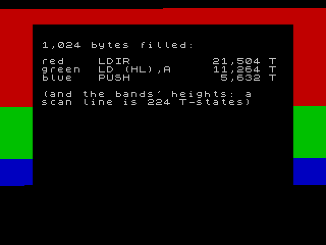

10. Speed
A 48K has 69,888 T-states a frame, and a demo or game has to fit everything into them: drawing, music, moving things, reading the keys. When it doesn't fit, it drops to 25 frames a second, and it shows. This chapter is about making code fast, in the order that pays: measure first, then choose a better method, and only then shave T-states off instructions.
Measure first
Limoniter's profiler (chapter 2) counts the T-states spent at every address of a program running on the built-in Spectrum, contention included, and shows the routines that took longest. It's nearly always one routine, and nearly never the one you'd have guessed.
The oldest way works anywhere: change the border colour when a routine starts, and back when it ends. The border's band shows how many scan lines it took, at 224 T-states a line (228 on a 128K). examples/ch10_speed.asm does that for three ways of filling 1,024 bytes:

| Way | T-states a byte | For 1,024 bytes | Scan lines |
|---|---|---|---|
LDIR |
21 | 21,504 | 96 |
LD (HL),A and INC L, unrolled |
11 | 11,264 | 50 |
PUSH |
5.5 | 5,632 | 25 |
The status bar's T-states, as you put the cursor on each line, are the quickest way to count (chapter 2). The counts are Zilog's (the Z80 User Manual), for code and data in uncontended memory; in contended memory, add the waits of chapter 3.
Contended memory first
The cheapest speed-up on a Spectrum is to move code out of $4000–$7FFF. Chapter 3's example measures the same loop 18% slower there. Code, its tables and its stack all belong above $8000 (or in banks 0, 2, 4 and 6 on a 128K, 0 to 3 on a +2A).
Unrolling
A loop pays for its counting every time round: DJNZ costs 13 T-states, more than many loop bodies. Writing the body out n times (unrolling) pays that once. sjasmplus's REPT does the writing:
ld b,4 ; four pages of 256 bytes
.page:
rept 256
ld (hl),a ; 7
inc l ; 4: within a page, INC L is enough (INC HL is 6)
endr
inc h
dec b
jp nz,.pageThat's the example's middle way: 11 T-states a byte, half LDIR's 21, for 512 bytes of code. The trade is always memory; on a 48K there's usually some to spare above $C000.
Small choices inside a loop add up too:
| Instead of | Use | Saves |
|---|---|---|
INC HL (6) |
INC L (4), when the data doesn't cross a 256-byte boundary |
2 |
LD A,0 (7) |
XOR A (4), when the flags don't matter |
3 |
JR (12, taken) in a loop |
JP (10), when it's always taken |
2 |
CP 0 (7) |
OR A (4) |
3 |
| a table you add an offset to | a table aligned to 256 (align 256), indexed by L |
the add |
The last is how chapter 5's plotting and sine tables are read: LD H,table/256, LD L,index, LD A,(HL).
Self-modifying code
A value a loop needs can be written into the loop's own instruction, where it costs nothing to fetch. The example puts the fill value straight into an LD DE before it runs:
ld a,(Value)
ld (PushValue+1),a ; the value into the LD DE below: its low byte
ld (PushValue+2),a ; and its high
...
PushValue:
ld de,0 ; the 0 is replaced before this runsand chapter 5's border bars patch two bytes of their loop, two NOPs or a JR, to make it 224 or 228 T-states for the machine it's on. On the Z80 this is safe: there's no instruction cache to go stale, as there is on the Amiga's later processors. It does mean the code can't be in ROM, and that reading it is harder: say in a comment what's patched, and by what.
The stack
PUSH writes two bytes in 11 T-states, and POP reads two in 10: no other Z80 instruction moves memory as fast. So the fastest fills, clears and copies point SP at the memory and push or pop. The example's fastest fill:
di ; an interrupt now would push into the buffer
ld (SavedSp),sp
ld sp,BUFFER+1024 ; PUSH writes downwards, from the end
PushValue:
ld de,0
rept 512
push de
endr
ld sp,(SavedSp)
ei5.5 T-states a byte. Clearing the whole 6,144 bytes of the screen this way is about 34,000 T-states, under half a frame (the same with LDIR is nearly two frames). For copying, POP from the source and PUSH to the destination, moving SP between them with LD SP,HL or LD SP,IX every few pairs: chapter 6 shows the idea for sprites, and chapter 5's multicolour writes attributes with PUSH in the border's time.
The rules: interrupts off while SP isn't the stack (or an interrupt routine that copes), and SP put back after.
Choose a better method
After all that, the biggest gains are still in doing less: drawing only what changed, pre-shifting sprites once rather than shifting them every frame (chapter 6), working out a table at the start rather than a sum every time, keeping x and y in the form the screen wants (a screen address and a bit) rather than as numbers to convert. Every fast Spectrum program is mostly tables and unrolled loops, and the art is choosing which.